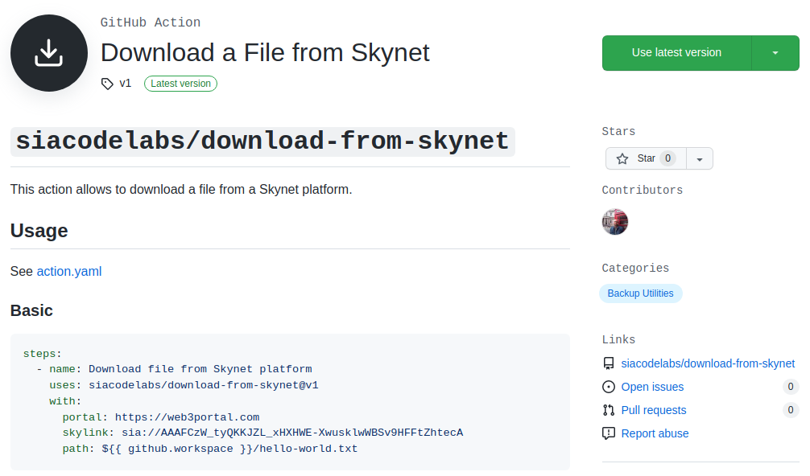

Acciones personalizadas compuestas
Una de las características más interesantes de GitHub Actions es la posibilidad de ampliar la colección de acciones disponibles con algunas escritas por nosotros mismos. Permite que desarrollemos acciones que automatizan determinadas operaciones que solemos hacer con frecuencia para las que actualmente no tenemos una disponible. Es una tarea muy sencilla que vamos a abordar en la presente lección.
Al finalizar, sabrá:
-
Qué es una acción personalizada.
-
Cómo desarrollar acciones compuestas.
-
Cómo invocar las acciones personalizadas.
Introducción
Una acción personalizada (custom action) es aquella que desarrollamos nosotros mismos para su uso en uno o varios flujos de trabajo. Estas acciones pueden interactuar con el repositorio o realizar ciertas tareas durante su ejecución. Distinguimos entre acciones Docker, acciones JavaScript y acciones compuestas. En nuestro caso, vamos a centrar nuestros esfuerzos en las acciones compuestas y en las desarrolladas en JavaScript. En esta lección, presentaremos aspectos comunes y las compuestas, dejando para la siguiente las escritas en JavaScript.
Una acción compuesta (composite action) es aquella que contiene una secuencia de pasos a ejecutar. Mientras que una acción JavaScript (JavaScript action) es aquella que realiza una determinada operación y se implementa en JavaScript. En nuestro caso, usaremos Node.js y TypeScript.
Ambos tipos de acciones contienen, como mínimo, un archivo README.md y un archivo de metadatos action.yaml que vamos a estudiar a continuación.
Archivo README.md
Toda acción debe contener un archivo README.md que la describa. Se recomienda que contenga:
-
La acción.
-
Sus entradas y sus salidas.
-
Los secretos que usa.
-
Las variables de entorno que usa.
Para facilitar su uso, unos ejemplos adicionales vienen muy bien.
Archivo de metadatos action.yaml
El archivo action.yaml contiene información sobre la propia acción como, por ejemplo, su nombre, su descripción, sus entradas, sus salidas y lo que ejecutar cuando se invoca. Su contenido es un objeto que dispone de las siguientes propiedades:
| Propiedad | Descripción |
|---|---|
| name | Título de la acción en el marketplace. |
| description | Breve descripción de la acción. |
| author | Nombre del autor de la acción. |
| inputs | Parámetros de entrada esperados. |
| outputs | Salidas generadas por la acción. |
| runs | Ejecución de la acción. |
| branding | Información sobre el icono asociado a la acción. |
He aquí un ejemplo ilustrativo extraído de https://github.com/siacodelabs/download-from-skynet:
name: Download a File from Skynet
description: Action for downloading a file from a Skynet platform.
author: Sia Codelabs
branding:
icon: download
color: gray-dark
inputs:
portal:
description: Portal URL to use.
required: true
default: https://web3portal.com
skylink:
description: Skylink to download.
required: true
path:
description: Local path where to save the file.
required: true
runs:
using: node16
main: dist/cjs/index.js
Propiedad name del archivo action.yaml
La propiedad name la utiliza el marketplace para fijar su título. Debe ser único en todo el marketplace. A continuación, se muestra un ejemplo ilustrativo, donde el texto Download a File from Skynet es el valor de name:

Propiedad inputs del archivo action.yaml
La propiedad inputs del archivo action.yaml describe las entradas de la acción. GitHub Actions esperará que se pasen esas entradas. Consiste en un objeto donde cada propiedad representa una entrada con las siguientes propiedades:
| Propiedad | Descripción |
|---|---|
| description | Breve descripción de la entrada. |
| required | ¿Es necesario pasar un valor para esta entrada? |
| default | Valor predeterminado por si no se pasa un valor explícitamente. |
He aquí un ejemplo:
inputs:
portal:
description: Portal URL to use.
required: true
default: https://web3portal.com
skylink:
description: Skylink to download.
required: true
path:
description: Local path where to save the file.
required: true
Propiedad outputs del archivo action.yaml
Además de indicar las entradas, también debemos indicar sus salidas si la acción genera alguna. Esto se hace con la propiedad outputs del archivo action.yaml. Un objeto donde cada propiedad representa una salida, cuyo valor contiene su descripción:
| Propiedad | Descripción |
|---|---|
| description | Breve descripción de la salida. |
| value | Valor de salida. |
Ejemplo:
outputs:
skylink:
description: Skylink to use for downloading.
Las acciones compuestas deben proporcionar los valores de sus salidas mediante el archivo indicado por la variable de entorno GITHUB_OUTPUT. Cada línea de este archivo representa una salida y debe presentar el formato nombreSalida=valorSalida. Ejemplo ilustrativo:
- run: |
# ...
echo "salida=valor" >> $GITHUB_OUTPUT
Propiedad branding del archivo action.yaml
Mediante la propiedad branding, podemos indicar metadatos relacionados con el icono que aparecerá en el marketplace asociado a la acción. Consiste en un objeto con las siguientes propiedades:
| Propiedad | Descripción |
|---|---|
| icon | Icono a utilizar como, por ejemplo, activity, download, upload, etc. |
| color | Color de fondo como, por ejemplo, gray-dark, orange, black, etc. |
Ejemplo ilustrativo:
branding:
icon: upload
color: gray-dark
Acciones compuestas
Una acción compuesta (composite action) es aquella cuya ejecución consiste en una secuencia de pasos a ejecutar. Es muy sencilla de escribir y no requiere grandes conocimientos.
En https://github.com/siacodelabs/setup-antlr4, puede echar un vistazo a una acción compuesta que instala Antlr4:
name: Setup Antlr4 on Ubuntu
description: Set up Antlr4.
author: Sia Codelabs
branding:
icon: play-circle
color: gray-dark
inputs:
antlr4-version:
description: Antlr version to install.
required: false
default: "4.11.1"
setup-java:
description: Install JDK.
required: false
default: "true"
runs:
using: composite
steps:
- name: Update APT information
shell: bash
run: sudo apt update
- name: Set up JDK
if: inputs.setup-java
uses: actions/setup-java@v3
with:
java-version: "17"
distribution: temurin
- name: Install dependencies
shell: bash
run: |
sudo apt install -y curl
sudo apt install -y file
- name: Download Antlr4
shell: bash
run: |
cd /usr/local/lib
sudo curl -O https://www.antlr.org/download/antlr-${{ inputs.antlr4-version }}-complete.jar
- name: Check file content type
shell: bash
run: |
fileType=$(file -i /usr/local/lib/antlr-${{ inputs.antlr4-version }}-complete.jar)
if [[ ! "$fileType" =~ "application/java-archive" ]]; then
echo "::error::File should be application/java-archive. Got: $fileType."
exit 1
fi
- name: Set up Antlr4
shell: bash
run: |
export CLASSPATH=.:/usr/local/lib/antlr-${{ inputs.antlr4-version }}-complete.jar:$CLASSPATH
sudo printf '#!/usr/bin/env bash\n\njava -Xmx500M -cp "/usr/local/lib/antlr-${{ inputs.antlr4-version }}-complete.jar:$CLASSPATH" org.antlr.v4.Tool $*\n' > /usr/local/bin/antlr4
sudo chmod ugo+x /usr/local/bin/antlr4
Propiedad runs de una acción compuesta
Las acciones compuestas deben tener un archivo action.yaml, dentro del cual, su propiedad runs contiene lo que debe ejecutarse. Concretamente, esta propiedad de tipo objeto puede contener las siguientes propiedades:
| Propiedad | Descripción |
|---|---|
| using | Siempre debe ser composite. |
| steps | Pasos a ejecutar. |
Cuando se indica un paso de shell en una acción compuesta, siempre hay que indicar el shell en cuestión, a diferencia de los pasos que aparecen en un flujo de trabajo donde no es obligatorio. Obsérvelo en el ejemplo anterior.
En una acción compuesta, el acceso a los valores de entrada se hace a través del contexto inputs, tal y como hacemos en un flujo de trabajo. Por otro lado, vea que los pasos a ejecutar son similares a los de un trabajo. Pueden ser tanto pasos que usan acciones ya definidas como pasos de shell.
Salidas de la acción compuesta
Cuando una acción compuesta tiene que devolver algo, debe declarar una salida en la propiedad outputs del archivo action.yaml y fijar su valor mediante un paso de shell que ejecute lo siguiente:
- run: echo "nombreSalida=valor" >> $GITHUB_OUTPUT
GitHub Actions espera que le proporcionemos las salidas mediante un archivo de variables de entorno especial, cuya ruta pone a nuestra disposición mediante la variable de entorno GITHUB_OUTPUT.
Empaquetado de una acción compuesta
Las acciones compuestas deben empaquetarse con el archivo de metadatos action.yaml y cualquier archivo o script que sea utilizado por ella. A continuación, se muestra un paso que ejecuta un determinado script, el cual debe encontrarse dentro del directorio asociado a la acción. Este directorio se puede extraer de la propiedad action_path del contexto github. Veamos el código de ejemplo:
runs:
using: "composite"
steps:
- run: ${{ github.action_path }}/test/script.sh
shell: bash
Visibilidad de las acciones personalizadas
El objeto de una acción personalizada, independientemente de su tipo, es poder reutilizarla. Para ello, debemos ponerla a disposición de los flujos de trabajo de alguna forma. La visibilidad (visibility) de la acción indica si es accesible por todo el mundo o sólo por nosotros mismos. Una acción pública (public action) es aquella que puede reutilizarse en cualquier flujo de trabajo. Mientras que una acción privada (private action) sólo se puede utilizar: en el repositorio privado en el que se define; en otro repositorio de la misma cuenta, tanto si es público como privado; o bien, en uno público de otra cuenta.
Acciones privadas
Una acción privada (private action) sólo podemos utilizarla en el repositorio privado en el que la definimos o en un repositorio público o privado de la misma cuenta. Deben ubicarse en el directorio .github/actions del repositorio, el cual contiene un directorio específico para cada acción personalizada, conocido formalmente como directorio de acción (action directory). En este directorio de acción, ubicaremos todos sus archivos. Así, por ejemplo, si definimos tres acciones privadas A, B y C, tendremos los siguientes directorios de acción: .github/actions/A, .github/actions/B y .github/actions/C.
Para invocar una acción privada, tendremos que indicar, en la propiedad uses del paso, la ruta al directorio de la acción con el formato ./nombreAcción. El nombre de la acción es el del directorio de la acción. Por ejemplo, si la acción se encuentra en .github/actions/A, la invocaremos con ./A.
Acciones públicas
Una acción pública (public action) es aquella que está disponible para el uso de cualquiera. Puede hacerse de dos formas. Mediante su ubicación en un repositorio público como el .github de la organización que vimos anteriormente para los flujos de trabajo reutilizables. O bien, mediante el GitHub Marketplace.
Acciones definidas en un repositorio público
La manera más sencilla de hacer pública una acción es ubicarla en el repositorio público .github de la organización. En este, mantendremos la acción dentro de su directorio de acción en la ruta .github/actions, tal y como vimos con las acciones privadas. Pero al estar en un repositorio público, cualquiera podrá utilizarlo.
Para invocar una acción de un repositorio público, la propiedad uses debe contener el siguiente formato:
nombrePropietario/nombreAcción
Acciones publicadas en el GitHub Marketplace
Otra posibilidad es publicar la acción en el GitHub Marketplace para facilitar su acceso a la comunidad. En este caso, hay ciertas restricciones que debemos conocer:
-
La acción debe definirse en su propio repositorio público. Este repositorio sólo debe contener esa acción.
-
Los archivos action.yaml y README.md deben encontrarse en la raíz del repositorio.
-
El identificador de la acción será el formado por propietario/repositorio.
Puede utilizar, como ejemplo, el repositorio https://github.com/actions/setup-node, donde se encuentra la acción actions/setup-node.
Paso de datos al ejecutor
Para pasar datos al ejecutor y, por lo tanto, a los pasos siguientes al de nuestra acción personalizada, hay que utilizar archivos de entorno. Un archivo de entorno (environment file) es un archivo que contiene variables de entorno generadas o establecidas por la acción en curso. Este archivo debe contener una línea para cada variable con el siguiente formato nombreVariable=valor. GitHub Actions nos indica el archivo a utilizar mediante la variable de entorno GITHUB_ENV cuyo valor fija él. Así, por ejemplo, en una acción compuesta, e incluso en un paso de un trabajo, podemos usar:
echo "variableDeEntorno=valor" >> $GITHUB_ENV
Flujos de trabajo
Las acciones también tienen sus flujos de trabajo con los que probar su funcionamiento, no lo olvide. Tendrán un flujo de trabajo con el que probar su funcionalidad. Por ejemplo, en la acción compuesta de ejemplo, siacodelabs/setup-antlr4, la prueba consiste en comprobar que Antlr4 está disponible tras la ejecución de la acción:
name: CI
on:
push:
branches:
- "**"
permissions:
contents: write
jobs:
test:
runs-on: ubuntu-latest
steps:
- name: Clone repository
uses: actions/checkout@v3
- name: Set up Antlr4
uses: ./
- name: Check installation
run: |
cat $(which antlr4)
antlr4
Lo que debe quedarle claro es cómo invocar la propia acción en uno de sus flujos de trabajo.
Sencillo, mediante ./, en nuestro ejemplo, como sigue:
- name: Set up Antlr4
uses: ./